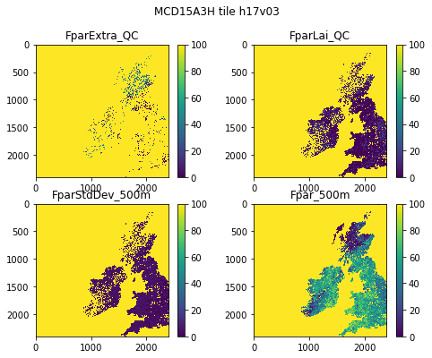

024 Image display : Answers to exercises¶
Exercise 1¶
Plots the first datasets in
data_MCD15A3Has subplots in a 2 x 2 shape.
Hint: Use a loop for the keys of data_MCD15A3H. Set up the 2 x 2 subplots with:
fig, axs = plt.subplots(2,2,figsize=(x_size,y_size))
axs = axs.flatten()
then you can refer to the subplot axes as ax[0], ax[1], ax[2] and ax[3] when you loop over the keys. Don’t forget to increase x_size,y_size appropriately.
import matplotlib.pyplot as plt
from geog0111.modis import Modis
kwargs = {
'product' : 'MCD15A3H',
'tile' : 'h17v03',
}
modis = Modis(**kwargs)
data_MCD15A3H = modis.get_data(2020,1+20*4)
# this is mnost neatly done with a
# loop over the keys we want
keys = list(data_MCD15A3H.keys())[:4]
name = f'{kwargs["product"]} tile {kwargs["tile"]}'
# plot size
x_size,y_size = 8,6
shape = (2,2)
fig, axs = plt.subplots(*shape,figsize=(x_size,y_size))
# dont flatten if shape is (1,1)
if shape[0] == 1 and shape[1] == 1:
axs = [axs]
else:
axs = axs.flatten()# set the figure title
fig.suptitle(name)
# the loop
for i,k in enumerate(keys):
# plot image data
im = axs[i].imshow(data_MCD15A3H[k],\
vmin=0,vmax=100,\
interpolation='nearest')
axs[i].set_title(k)
fig.colorbar(im, ax=axs[i])

Exercise 2¶
write a function called
im_displaythat takes as input:a data dictionary
a list of keywords of datasets to plot
optionally:
a title
a colourmap name
lower and upper limits for plot data (vmin, vmax)
x_size,y_size
subplots shape : e.g. (2,2)
You should assume some default values for the optional items if not given. For the subplots shape, assume it is (n,1) where n is the length of the keyword list.
You should set the default values of vmin and vmax to None, as this just then takes the dataset default minimum and maximum.
Your code should be well-documented.
test your code
Note that you will have to experiment a bit with the x_size,y_size values to get a good plot. It is not easy to automate that.
# ANSWER
import matplotlib.pyplot as plt
from geog0111.modis import Modis
kwargs = {
'product' : 'MCD15A3H',
'tile' : 'h17v03',
}
modis = Modis(**kwargs)
data_MCD15A3H = modis.get_data(2020,1+20*4)
def im_display(data,names,\
title=None,colourmap=None,\
vmin=None,vmax=None,\
x_size=12,y_size=8,shape=None):
'''
a function called im_display that takes as input:
data : a data dictionary
names : a list of keywords of datasets to plot
optionally:
title = None : a title
colourmap = None : a colourmap name
vmin,vmax : lower and upper limits for plot data
x_size=16 : plot x size * shape[0]
y_size=12 : plot y size * shape[1]
shape=None : subplots shape : e.g. (2,2)
'''
# sort out options
n = len(names)
if shape == None:
shape = (n,1)
# adaptive size
x_size = x_size * shape[0]
y_size = y_size * shape[1]
fig, axs = plt.subplots(*shape,figsize=(x_size,y_size))
if shape[0] == 1 and shape[1] == 1:
axs = [axs]
else:
axs = axs.flatten()
# switch off ticks
plt.setp(axs, xticks=[], yticks=[])
# set the figure title
if title:
fig.suptitle(title)
# loop over names
for i,k in enumerate(names):
# plot image data
im = axs[i].imshow(data[k],\
vmin=vmin,vmax=vmax,\
interpolation='nearest')
if colourmap:
im.set_cmap(colourmap)
axs[i].set_title(k)
fig.colorbar(im, ax=axs[i])
# test
import matplotlib.pyplot as plt
from geog0111.modis import Modis
kwargs = {
'product' : 'MCD15A3H',
'tile' : 'h17v03',
}
modis = Modis(**kwargs)
data_MCD15A3H = modis.get_data(2020,1+20*4)
# this is mnost neatly done with a
# loop over the keys we want
keys = list(data_MCD15A3H.keys())[:4]
name = f'{kwargs["product"]} tile {kwargs["tile"]}'
im_display(data_MCD15A3H,keys,\
title=None,colourmap=None,\
x_size=4,y_size=14,shape=(4,1))

im_display(data_MCD15A3H,keys,\
title=None,colourmap='gray',\
x_size=4,y_size=3,shape=(2,2))

Exercise 3¶
Write a function called
plot_lcthat takes as input modis land cover dataset and plots the associated land cover mapYou might use
x_size,y_sizeas optional inputs to improve scaling
# ANSWER
# this is a little long-winded, but just wraps up the codes above
import matplotlib
import matplotlib.patches
import matplotlib.pyplot as plt
from geog0111.modis import Modis
import pandas as pd
def plot_lc(data,x_size=12,y_size=12):
'''
takes as input MODIS LC dataset
plots the associated land cover map
x_size,y_size as optional inputs
'''
lc_Type1 = pd.read_csv('data/LC_Type1_colour.csv')
# generate matplotlib cmap and norm objects from these
# get the LC codes, colours and classes
# from LC_Type1_class and LC_Type1_colour
cmap = matplotlib.colors.\
ListedColormap(list(lc_Type1['colour']))
norm = matplotlib.colors.\
BoundaryNorm(list(lc_Type1['code']), len(lc_Type1['code']))
# set up the legend
legend_labels = dict(zip(list(lc_Type1['colour']),\
list(lc_Type1['class'])))
patches = [matplotlib.patches.Patch(color=c, label=l)
for c,l in legend_labels.items()]
fig, axs = plt.subplots(1,figsize=(x_size,y_size))
im = axs.imshow(data,cmap=cmap,norm=norm,interpolation='nearest')
plt.legend(handles=patches,
bbox_to_anchor=(1.4, 1),
facecolor="white")
from geog0111.modis import Modis
from geog0111.plot_lc import plot_lc
year,tiles = 2018,['h31v10']
# ensure tiles is a list
kwargs = {
'tile' : list(tiles),
'product' : 'MCD12Q1',
'sds' : ['LC_Type1']
}
# get the data
modis = Modis(**kwargs)
# specify day of year (DOY) and year
data_MCD12Q1 = modis.get_data(year,doy=1)
# the data we want here
plot_lc(data_MCD12Q1['LC_Type1'])